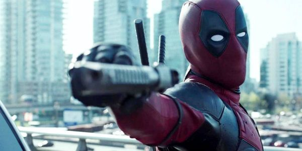
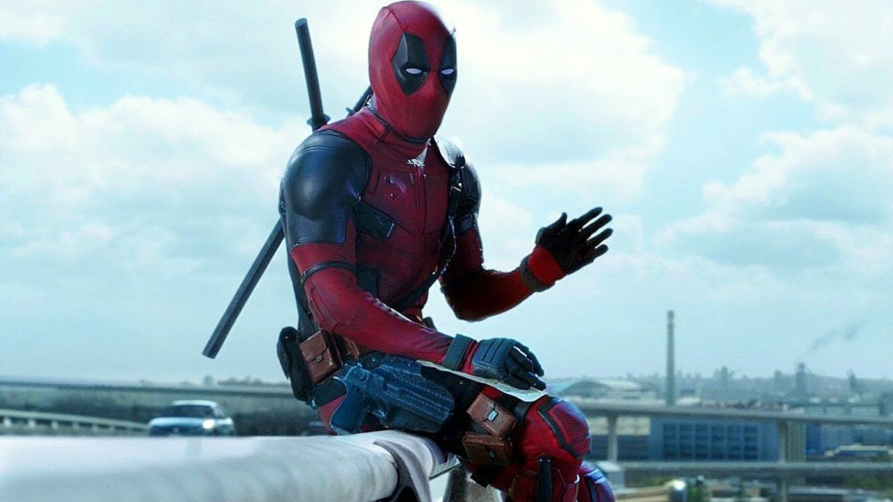

Deadpool (2016)
A Deadpool egy amerikai szuperhősfilm, amely a Marvel Comics azonos nevű karakterén alapul. A filmet Tim Miller rendezte, Ryan Reynolds főszereplésével.



A film egy egykori különleges alakulat katonáját, Wade Wilsont követi, aki egy kísérlet után különleges gyógyító képességekre tesz szert, és Deadpool néven indul bosszút azokon, akik tönkretették az életét.
Stílusa humoros, önreflexív és akciódús, amely különlegessé teszi a szuperhősfilmek között.